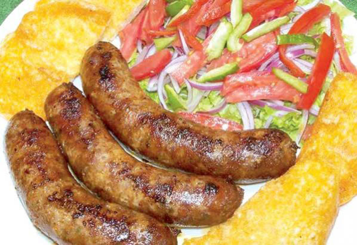

Chorizo
Ingredientes
- Para el Chorizo
- 1 kilo de carne molida de cerdo
- 1 kilo de tripa gorda de res
- 1 cucharada de perejil finamente picado
- 1 cucharadita de orégano desmenuzado
- 2 cucharaditas de hierbabuena picada
- 2 taza de cebolla verde picada fina (colas)
- Hilo de cáñamo, lo necesario
- 1 pizca de azúcar.
- 1 pizca de cáscara de naranja raspada
- 1/2 cucharadita de clavo de olor molido
- 1 pizca de canela molida
- 1 cucharada de ají colorado molido. Sal a gusto.
- Para el acompañamiento
- 4 panes enteros
- 2 cabezas de lechuga
Preparación
Lavar bien por fuera la tripa. Dar la vuelta y raspar las asperezas. Limpiar hasta que esté transparente. Tomar una de las puntas de la tripa y amarrar fuerte con el hilo de cáñamo. Aparte, en un recipiente, mezclar bien la carne, los condimentos, el clavo de olor, el azúcar, el perejil, la cáscara de naranja, la hierba buena, la cebolla verde, la canela, sal al gusto y por último el ají colorado molido. Embutir este preparado en aproximadamente unos diez centímetros de la tripa. Después de quedar bien embutido, torcer la tripa dos veces y volver a embutir con espacio de un centímetro. Nuevamente llenar diez centímetros, hasta terminar la masa. Cerrar amarrando con el hilo. Deshojar la lechuga y lavar hoja por hoja. Dejar reposar en un litro de agua con 10 gotas de yodo durante 10 minutos y picar finamente. Luego, para la zarza, lavar los ingredientes, picar, al final mezclar con sal y aceite. En una sartén con aceite caliente, freír los chorizos hasta que estén dorados y cocidos. Una vez fritos sacar en un recipiente. Partir los panes por la mitad, y dorar en el mismo aceite que se ha frito el chorizo. Servir el chorizo acompañado de los pancitos y la lechuga picada con sal y aceite. Adornar con la zarza.